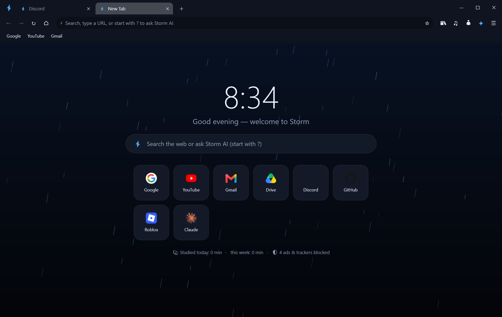

Ads and trackers, gone
Blocked before they even load, so pages feel lighter and quicker.
Storm is fast, private and full of nice touches. Ads blocked, a free AI that lives on your own PC, and a focus mode for when you really need to get things done.

No hunting for extensions on day one. Storm already does the things you'd go looking for.
Blocked before they even load, so pages feel lighter and quicker.
Ask about any page, get a summary, or get quizzed on it. Free and on your own PC.
A focus timer, blocked distractions and flashcards made from what you're reading.
Video or photo wallpapers, custom cursors and shareable themes.
Play your own songs right inside the browser. No extra app needed.
Vertical tabs, split view, a bottom toolbar. Save a setup and switch in one click.
Open the sidebar on any page and ask away. It's right there, next to what you're reading.
Flip on study mode and Storm turns from a distraction machine into a study buddy.
No account to make and nothing quietly sent home.
The latest update brings a bunch of things people asked for.
Everything on this page costs nothing. If you'd like antivirus or a VPN built in, there are optional add-ons from $2.99 a month.
See the add-onsYes. Storm and everything built into it are free. The only paid things are the optional Rainshield, Mirage and RainProtection add-ons. If you use Claude in the AI sidebar, Anthropic bills you directly for your own key.
Yes. Storm uses Microsoft Edge WebView2, the same engine that powers Edge, so sites look and work the way you expect. You stay signed in to Google, Discord and everything else.
Yes. On first launch you can import bookmarks and history from Chrome, Edge, Firefox, Brave or Opera.
No. There's no telemetry, and your history, bookmarks and passwords stay on your PC, encrypted. The privacy page explains exactly what goes where.
A reasonably modern graphics card, since the AI runs on your own PC. No good GPU? You can use Claude with your own key instead, or just leave the AI off.
That message shows up for new apps that aren't code-signed yet, and Storm isn't yet. Click More info, then Run anyway. If you'd like to double-check the file first, compare its checksum on the download page.
Storm checks for updates on its own and verifies each update's signature before installing it. You don't have to do anything.
Free for Windows 10 and 11. Takes about a minute to set up.
Download Storm